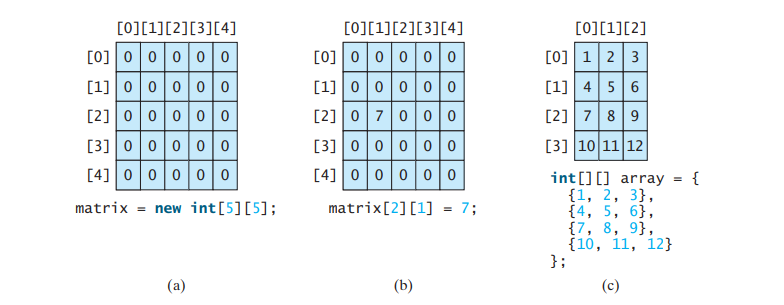
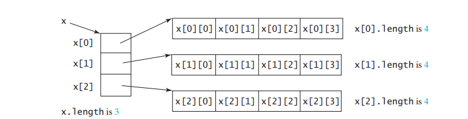

(8.2): What is the multidimensional array (2D array)?
A multidimensional array is an array of arrays.
Multidimensional arrays are useful when you want to store data as a tabular form, like a table with rows and columns.
- A two-dimensional array is an array in which each element is itself an array.
- It can be visualized as a grid or table, with rows and columns.
- You can access elements using two indices: one for the row and one for the column.
- int[][] twoDArray = new int[3][4]; // 3x4 2D array
- int[][] myNumbers = { {1, 2, 3, 4}, {5, 6, 7} };
System.out.println(myNumbers[1][2]); // Outputs 7 - 8.2.1 Declaring Variables of Two-Dimensional Arrays and Creating Two-Dimensional Arrays:
- Declare a variable for a two-dimensional array: elementType[][] arrayRefVar;
- Create a two-dimensional array: arrayRefVar = new elementType[numRows][numColumns];
- Access elements in a two-dimensional array: arrayRefVar[rowIndex][columnIndex];
- Figure-a: The statement matrix = new int[5][5];
Creates a two-dimensional array named matrix with dimensions 5 by 5.
This means matrix is an array that can hold 5 arrays, each of which can hold 5 integers.
The array is initialized with default values, which for integers is 0 in Java. - Figure-b: The statement matrix[2][1] = 7;
It assigns the value 7 to the element at the 3rd row and 2nd column.
In other words, it assigns the value 7 to the element in the 3rd row and 2nd column of the matrix array. - Figure-c: This is a declaration and initialization of a two-dimensional array .
It creates a 4x3 matrix where each row contains three elements. - 8.2.2 Obtaining the Lengths of Two-Dimensional Arrays:
- A two-dimensional array is an array of arrays, so each row can have a different length.
- length to get the number of rows and array[rowIndex].length to get the number of columns in a specific row.
- 8.2.3 Ragged Arrays:
- Ragged arrays have rows with different lengths.
- Example: int[][] raggedArray = new int[][] { {1}, {2, 3}, {4, 5, 6} };
- triangleArray[0][3] = 50; sets the value at the intersection of the first row and the fourth column to 50.
- triangleArray[4][0] = 45; sets the value at the intersection of the fifth row and the first column to 45.
- 8.1 Answer: int[][] m = new int[4][5];
- 8.2 Answer: Yes, They are ragged array.
- 8.3 Answer: array[0][1] is 2.
- 8.4 Answer:
- int[][] r = new int[2];
Answer: Invalid - int[] x = new int[];
Answer: Invalid - int[][] y = new int[3][];
Answer: Valid - int[][] z = {{1, 2}};
Answer: Valid - int[][] m = {{1, 2}, {2, 3}};
Answer: Valid - int[][] n = {{1, 2}, {2, 3}, };
Answer: Invalid
- int[][] r = new int[2];
Example:
Now I can discuss this figure. 
Now i can discus this figure

In Java, a two-dimensional array is essentially an array of arrays. Each element in a two-dimensional array is itself an array.
This means that each cell in the two-dimensional array can hold an array of values, creating a grid-like structure.